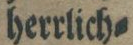
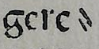
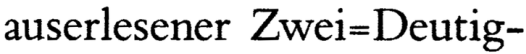

Silbentrennung
Die Transkription der Silbentrennung erfolgt nach Vorlage. Dabei können beim Trennungszeichen unterschiedliche Varianten vorkommen. Die konkrete Transkription des Trennungsstriches wird in den jeweiligen Levels geregelt.
Level 1
Die Transkription der Silbentrennung erfolgt nach Vorlage. Als Silbentrennstrich ist ungeachtet des Erscheinungsbildes im Text, der Bindestrich oder Hyphen-Minus (-) zu verwenden.
Level 2
Die Transkription der Silbentrennung erfolgt nach Vorlage. Eine Unterscheidung zwischen
den
Silbentrennstrichen und ⸗ wird nicht vorgenommen. Als
Trennstrich ist Bedingter Trennstrich oder Soft Hyphen zu
ververwenden.
Level 3
Die Transkription der Silbentrennung erfolgt nach Vorlage. Eine Unterscheidung zwischen den Silbentrennstrichen wird vorgenommen.
Übersicht
| Vorlage | Level 1 | Level 2 | Level 3 |
|---|---|---|---|
 |
- HYPHEN-MINUS : hyphen or minus sign hex: D; | -SOFT HYPHEN [SHY] : discretionary hyphen hex: ­ | -SOFT HYPHEN [SHY] : discretionary hyphen hex: ­ |
|  | - HYPHEN-MINUS : hyphen or minus sign hex: D; | -SOFT HYPHEN [SHY] : discretionary hyphen hex: ­ | ⸗DOUBLE OBLIQUE HYPHEN hex: ⸗ |
|  | - HYPHEN-MINUS : hyphen or minus sign hex: D; | -SOFT HYPHEN [SHY] : discretionary hyphen hex: ­ | ⸗DOUBLE OBLIQUE HYPHEN hex: ⸗ |
|  | - HYPHEN-MINUS : hyphen or minus sign hex: D; | ⹀DOUBLE HYPHEN hex: ⹀ | ⹀DOUBLE HYPHEN hex: ⹀ |